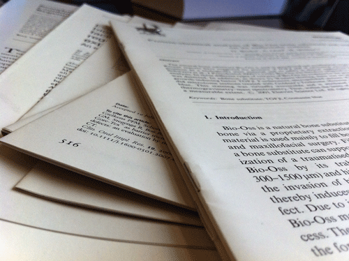
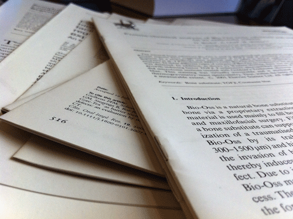

My favorites things to do are everything related to art. I like to write poems about life, living,and experiences. In there i find peace and find myself. Im also into photography, it helps me visualizate imaginary things in my head,through photography i can see more than just a view. So, as y'all can see i like deeper things that make u actually feel and live the moment.
 
